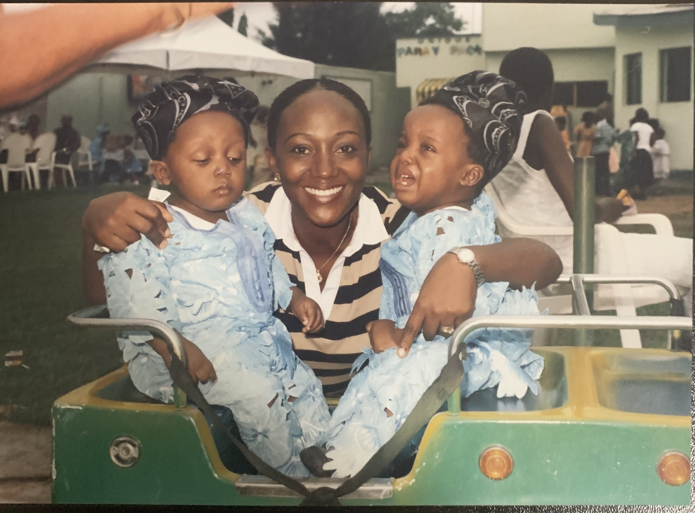

Cuando era pequeño, la mayor parte de mis parientes piensan que yo era un hijo muy silencioso, pero no me gusta ir al aire libre y yo dormía mucho. Mis parientes me gustaron porque no lloraba mucho cuando era pequeño. Yo pedí a mis parientes sobre este hecho, y me hablan este hecho es muy verdadero. Sin embargo, me hablan la razón de mi silencio fue porque tuve un trastorno del habla. Es muy malo que no hable mi primera palabra hasta que yo tenía casi cuatro años.
Durante los primeros años de mi vida preciosa, yo siempre quería ser un doctor porque mi mamá y papá eran doctores. Mis padres viajaban a los otros países. Ejemplos incluyen Brasil, Finlandia, Alemania, Irlanda, India, y los Estados Unidos para sus entrevistas.